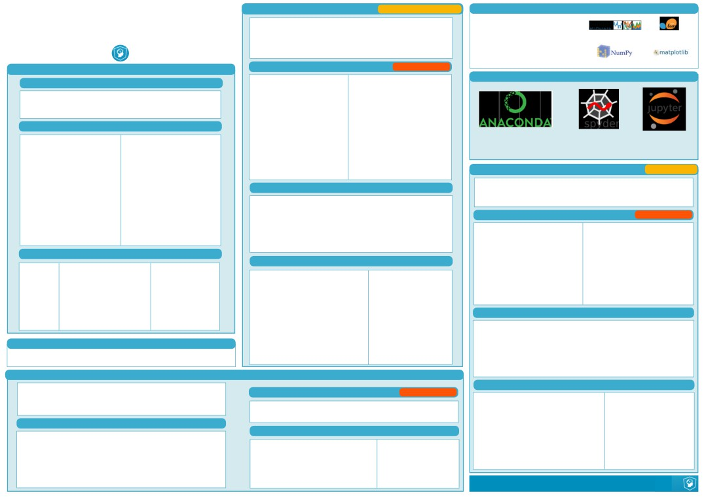
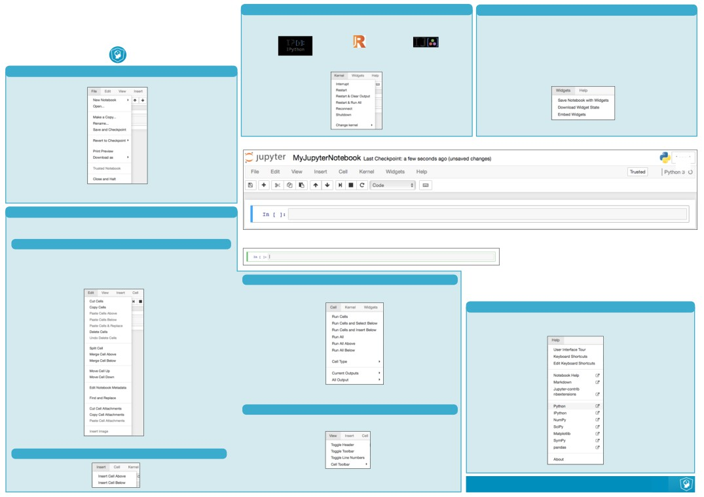
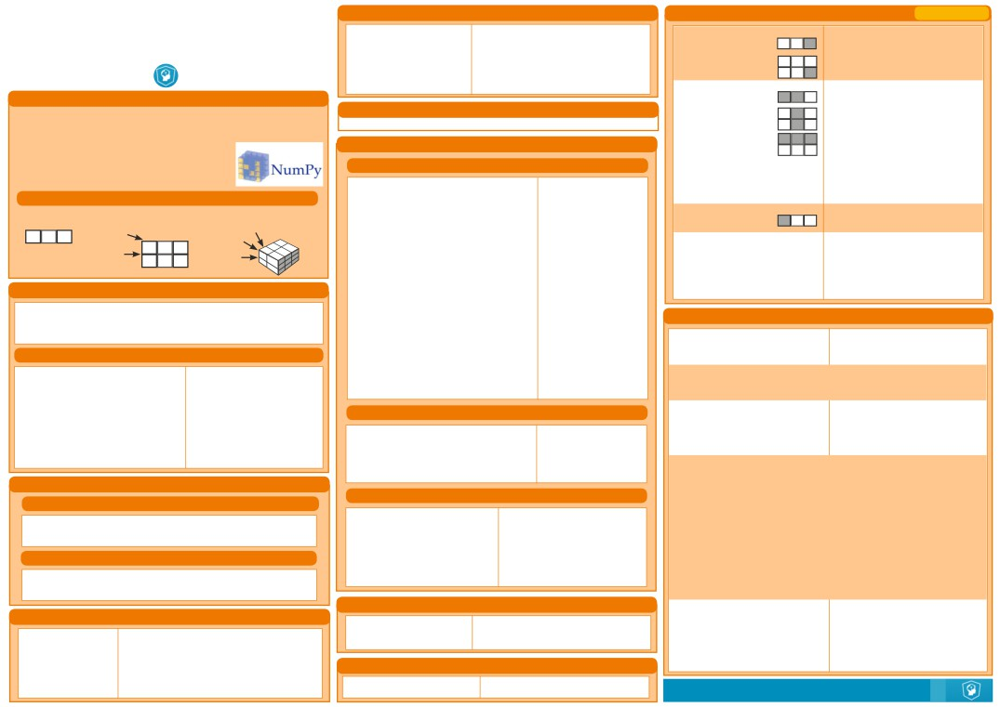
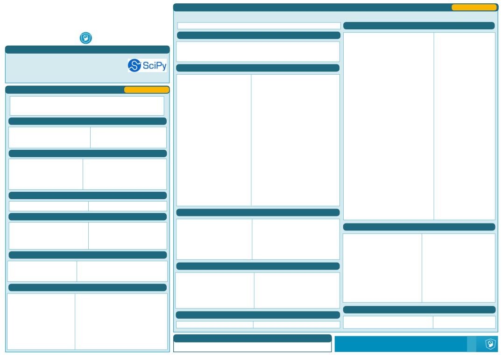
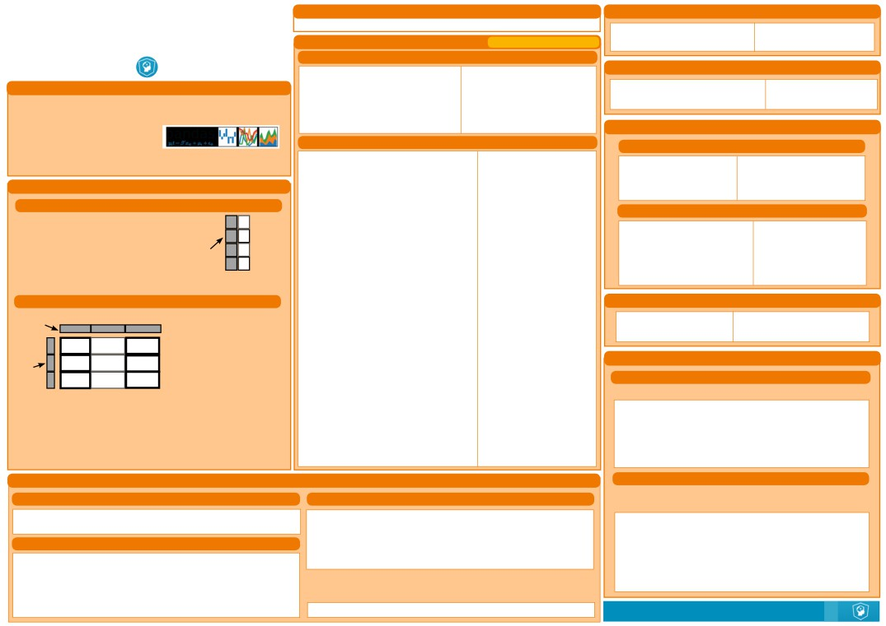
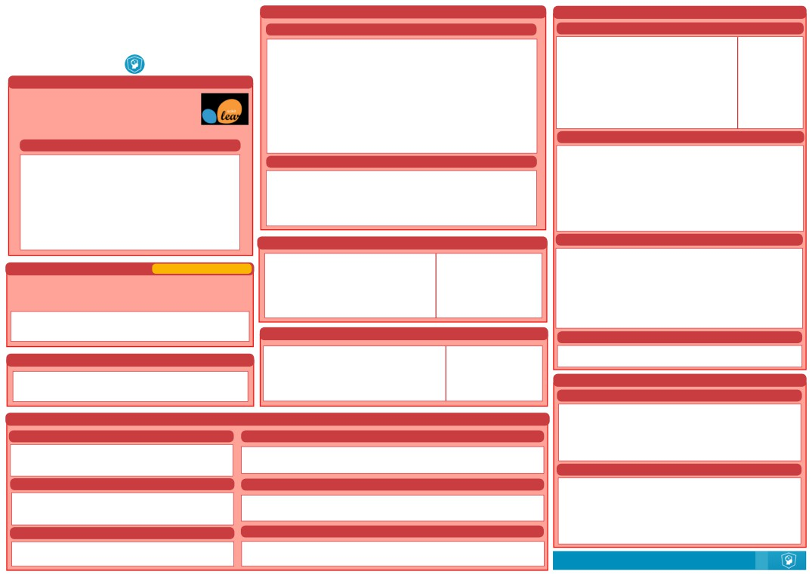
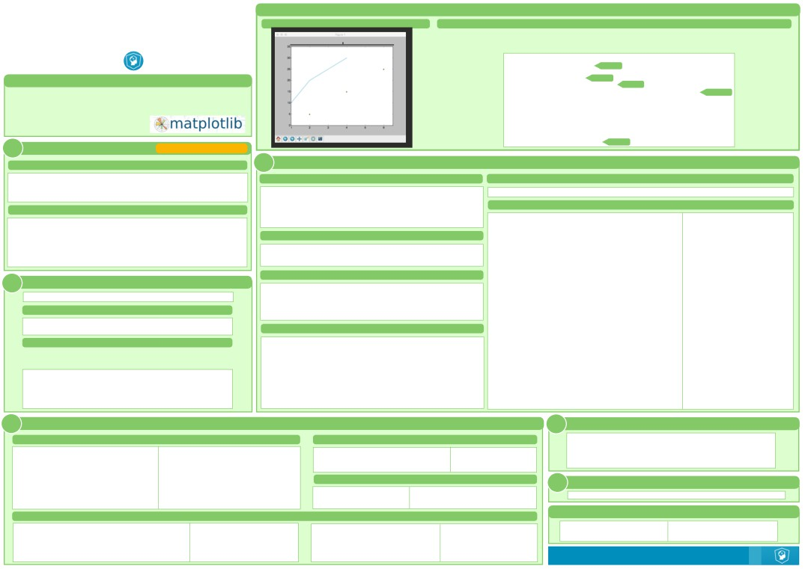
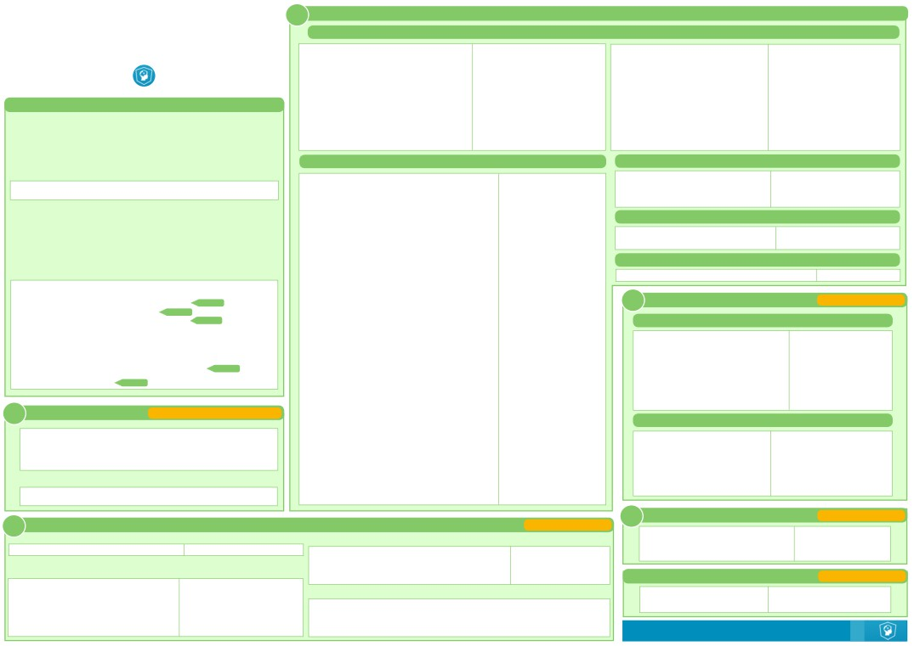
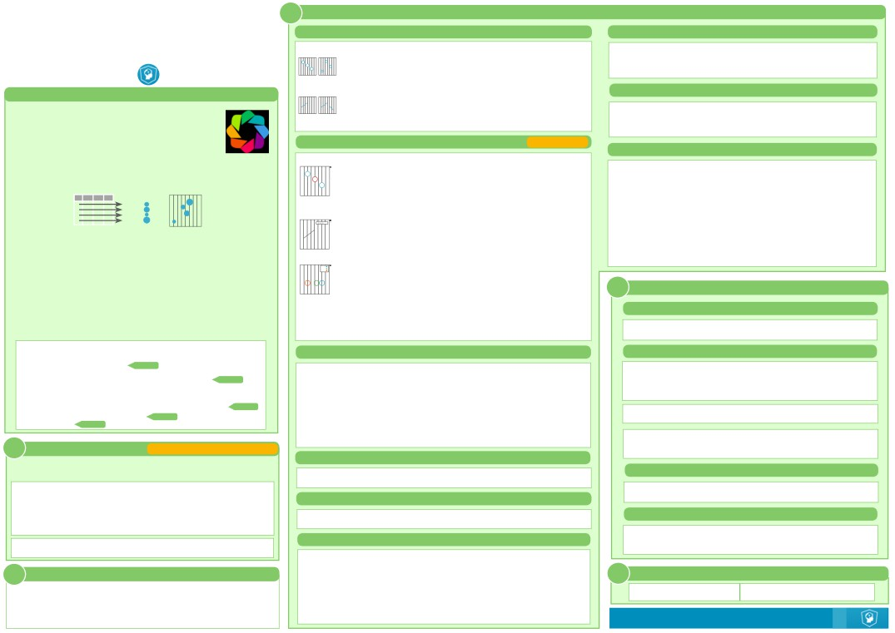

Lists
Also see NumPy Arrays
Libraries
Python For Data Science Cheat Sheet
>>> a = 'is'
Import libraries
Python Basics
>>> b = 'nice'
>>> import numpy
Data analysis
Machine learning
>>> my_list = ['my', 'list', a, b]
>>> import numpy as np
>>> my_list2 = [[4,5,6,7], [3,4,5,6]]
Selective import
>>> from math import pi
Scientific computing
2D ploting
Selecting List Elements
Index starts at 0
Variables and Data Types
Install Python
Subset
Variable Assignment
>>> my_list[1]
Select item at index 1
>>> x=5
>>> my_list[-3]
Select 3rd last item
>>> x
Slice
5
>>> my_list[1:3]
Select items at index 1 and 2
Calculations With Variables
>>> my_list[1:]
Select items afer index 0
>>> my_list[:3]
Select items before index 3
Leading open data science platform
Free IDE that is included
Create and share
>>> x+2
Sum of two variables
powered by Python
with Anaconda
documents with live code,
>>> my_list[:]
Copy my_list
7
visualizations, text, ...
Subset Lists of Lists
>>> x-2
Subtraction of two variables
>>> my_list2[1][0]
my_list[list][itemOfList]
3
Numpy Arrays
Also see Lists
>>> my_list2[1][:2]
>>> x*2
Multiplication of two variables
>>> my_list = [1, 2, 3, 4]
10
List Operations
>>> x**2
Exponentiation of a variable
>>> my_array = np.array(my_list)
25
>>> my_list + my_list
>>> my_2darray = np.array([[1,2,3],[4,5,6]])
>>> x%2
Remainder of a variable
['my', 'list', 'is', 'nice', 'my', 'list', 'is', 'nice']
Selecting Numpy Array Elements
Index starts at 0
1
>>> my_list * 2
>>> x/float(2)
Division of a variable
['my', 'list', 'is', 'nice', 'my', 'list', 'is', 'nice']
Subset
2.5
>>> my_list2 > 4
>>> my_array[1]
Select item at index 1
True
2
Types and Type Conversion
Slice
List Methods
>>> my_array[0:2]
Select items at index 0 and 1
str()
'5', '3.45', 'True'
Variables to strings
Get the index of an item
array([1, 2])
>>> my_list.index(a)
Count an item
Subset 2D Numpy arrays
int()
5, 3, 1
Variables to integers
>>> my_list.count(a)
Append an item at a time
>>> my_2darray[:,0]
my_2darray[rows, columns]
>>> my_list.append('!')
>>> my_list.remove('!')
Remove an item
array([1, 4])
float()
5.0, 1.0
Variables to floats
>>> del(my_list[0:1])
Remove an item
Numpy Array Operations
>>> my_list.reverse()
Reverse the list
bool()
True, True, True
Variables to booleans
>>> my_array > 3
>>> my_list.extend('!')
Append an item
array([False, False, False, True], dtype=bool)
>>> my_list.pop(-1)
Remove an item
>>> my_array * 2
Asking For Help
>>> my_list.insert(0,'!')
Insert an item
array([2, 4, 6, 8])
>>> help(str)
>>> my_list.sort()
Sort the list
>>> my_array + np.array([5, 6, 7, 8])
array([6, 8, 10, 12])
Strings
Numpy Array Functions
>>> my_string = 'thisStringIsAwesome'
String Operations
Index starts at 0
>>> my_string
>>> my_array.shape
Get the dimensions of the array
'thisStringIsAwesome'
>>> my_string[3]
>>> np.append(other_array)
Append items to an array
>>> my_string[4:9]
>>> np.insert(my_array, 1, 5)
Insert items in an array
String Operations
>>> np.delete(my_array,[1])
Delete items in an array
String Methods
>>> np.mean(my_array)
Mean of the array
>>> my_string * 2
>>> np.median(my_array)
Median of the array
'thisStringIsAwesomethisStringIsAwesome'
>>> my_string.upper()
String to uppercase
String to lowercase
>>> my_array.corrcoef()
Correlation coefficient
>>> my_string + 'Innit'
>>> my_string.lower()
Count String elements
>>> np.std(my_array)
Standard deviation
'thisStringIsAwesomeInnit'
>>> my_string.count('w')
>>> 'm' in my_string
>>> my_string.replace('e', 'i')
Replace String elements
True
>>> my_string.strip()
Strip whitespaces
DataCamp
Learn Python for Data Science Interactively

Working with Different Programming Languages
Widgets
Python For Data Science Cheat Sheet
Kernels provide computaton and communicaton with front-end interfaces
Notebook widgets provide the ability to visualize and control changes
Jupyter Notebook
like the notebooks. There are three main kernels:
in your data, ofen as a control like a slider, textbox, etc.
You can use them to build interactve GUIs for your notebooks or to
IRkernel
IJulia
synchronize stateful and stateless informaton between Python and
Installing Jupyter Notebook will automatcally install the IPython kernel.
JavaScript.
Saving/Loading Notebooks
Restart kernel
Interrupt kernel
Create new notebook
Interrupt kernel &
Download serialized
Restart kernel & run
Save notebook
clear all output
state of all widget
Open an existng
all cells
with interactve
models in use
notebook
Connect back to a
widgets
Make a copy of the
Restart kernel & run
remote notebook
current notebook
all cells
Embed current
Rename notebook
Run other installed
widgets
kernels
Revert notebook to a
Save current notebook
previous checkpoint
Command Mode:
and record checkpoint
Download notebook as
Preview of the printed
- IPython notebook
15
- Python
notebook
- HTML
Close notebook & stop
- Markdown
13
14
- reST
running any scripts
- LaTeX
1
2
3
4
5
6
7
8
9
10
11
12
- PDF
Writng Code And Text
Code and text are encapsulated by 3 basic cell types: markdown cells, code
cells, and raw NBConvert cells.
Edit Mode:
1. Save and checkpoint
9. Interrupt kernel
Edit Cells
2. Insert cell below
10. Restart kernel
3. Cut cell
11. Display characteristcs
Cut currently selected cells
Copy cells from
4. Copy cell(s)
12. Open command palete
to clipboard
clipboard to current
5. Paste cell(s) below
13. Current kernel
cursor positon
6. Move cell up
14. Kernel status
Paste cells from
Executng Cells
7. Move cell down
15. Log out from notebook server
clipboard above
Paste cells from
8. Run current cell
Run current cells down
current cell
Run selected cell(s)
clipboard below
and create a new one
Paste cells from
current cell
Asking For Help
below
clipboard on top
Run current cells down
Delete current cells
of current cel
and create a new one
Walk through a UI tour
Split up a cell from
above
Run all cells
Revert “Delete Cells”
current cursor
List of built-in keyboard
invocaton
Run all cells above the
Run all cells below
positon
Edit the built-in
shortcuts
current cell
the current cell
Merge current cell
keyboard shortcuts
Merge current cell
Change the cell type of
Notebook help topics
with the one above
toggle, toggle
with the one below
current cell
scrolling and clear
Descripton of
Move current cell up
Move current cell
toggle, toggle
current outputs
markdown available
Informaton on
down
scrolling and clear
in notebook
unofficial Jupyter
Adjust metadata
underlying the
Find and replace
all output
Notebook extensions
Python help topics
current notebook
in selected cells
IPython help topics
View Cells
Remove cell
Copy atachments of
NumPy help topics
Toggle display of Jupyter
SciPy help topics
atachments
current cell
Toggle display of toolbar
Matplotlib help topics
Paste atachments of
logo and filename
Insert image in
SymPy help topics
current cell
Toggle display of cell
selected cells
Pandas help topics
acton icons:
Insert Cells
- None
About Jupyter Notebook
- Edit metadata
- Raw cell format
Toggle line numbers
Add new cell above the
Add new cell below the
- Slideshow
current one
in cells
- Atachments
current one
- Tags
DataCamp
Learn Python for Data Science Interactively

Inspecting Your Array
Subseting, Slicing, Indexing
Also see Lists
Python For Data Science Cheat Sheet
>>> a.shape
Array dimensions
>>> len(a)
Length of array
NumPy Basics
1
2
3
>>> b.ndim
Number of array dimensions
>>> e.size
Number of array elements
1.5
2
3
>>> b.dtype
Data type of array elements
4
5
6
>>> b.dtype.name
Name of data type
>>> b.astype(int)
Convert an array to a different type
Slicing
>>> a[0:2]
1
2
3
Select items at index 0 and 1
NumPy
2
array([1, 2])
Asking For Help
1.5
2
3
The NumPy library is the core library for scientific computing in
>>> b[0:2,1]
Select items at rows 0 and 1 in column 1
>>> np.info(np.ndarray.dtype)
array([ 2.,
5.])
4
5
6
Python. It provides a high-performance multidimensional array
1.5
2
3
>>> b[:1]
Select all items at row 0
object, and tools for working with these arrays.
Array Mathematics
array([[1.5, 2., 3.]])
4
5
6
(equivalent to b[0:1, :])
>>> c[1,...]
Same as [1,:,:]
Use the following import convention:
Arithmetic Operations
array([[[ 3.,
2.,
1.],
[ 4.,
5.,
6.]]])
>>> import numpy as np
>>> g = a - b
Subtraction
array([[-0.5,
0. ,
0. ],
>>> a[ : :-1]
Reversed array a
NumPy Arrays
array([3, 2, 1])
[-3. , -3. , -3. ]])
1D array
2D array
3D array
>>> np.subtract(a,b)
Subtraction
>>> b + a
Addition
1
2
3
axis 2
array([[ 2.5,
4. ,
6. ],
axis 1
1
2
3
axis 1
[ 5. ,
7. ,
9. ]])
Fancy Indexing
1.5
2
3
>>> np.add(b,a)
Addition
>>> b[[1, 0, 1, 0],[0, 1, 2, 0]]
Select elements (1,0),(0,1),(1,2) and (0,0)
axis 0
axis 0
>>> a / b
Division
array([ 4. , 2. , 6. , 1.5])
4
5
6
array([[ 0.66666667,
1.
,
1.
],
>>> b[[1, 0, 1, 0]][:,[0,1,2,0]]
Select a subset of the matrix’s rows
[ 0.25
,
0.4
,
0.5
]])
array([[ 4. ,5. , 6. , 4. ],
and columns
>>> np.divide(a,b)
Division
[ 1.5, 2. , 3. , 1.5],
[ 4. , 5. , 6. , 4. ],
Creating Arrays
>>> a * b
Multiplication
[ 1.5, 2. , 3. , 1.5]])
array([[
1.5,
4. ,
9. ],
>>> a = np.array([1,2,3])
[
4. ,
10. ,
18. ]])
>>> b = np.array([(1.5,2,3), (4,5,6)], dtype = float)
>>> np.multiply(a,b)
Multiplication
Array Manipulation
>>> c = np.array([[(1.5,2,3), (4,5,6)], [(3,2,1), (4,5,6)]],
>>> np.exp(b)
Exponentiation
dtype = float)
>>> np.sqrt(b)
Square root
Transposing Array
>>> np.sin(a)
Print sines of an array
>>> i = np.transpose(b)
Permute array dimensions
Initial Placeholders
>>> np.cos(b)
Element-wise cosine
>>> i.T
Permute array dimensions
>>> np.log(a)
Element-wise natural logarithm
>>> np.zeros((3,4))
Create an array of zeros
>>> e.dot(f)
Dot product
>>> np.ones((2,3,4),dtype=np.int16) Create an array of ones
array([[ 7.,
7.],
>>> d = np.arange(10,25,5)
Create an array of evenly
[ 7.,
7.]])
spaced values (step value)
Adding/Removing Elements
>>> np.linspace(0,2,9)
Create an array of evenly
Comparison
spaced values (number of samples)
>>> h.resize((2,6))
Return a new array with shape (2,6)
>>> e = np.full((2,2),7)
Create a constant array
>>> a == b
Element-wise comparison
>>> np.append(h,g)
Append items to an array
array([[False, True, True],
>>> np.insert(a, 1, 5)
Insert items in an array
>>> f = np.eye(2)
Create a 2X2 identity matrix
>>> np.random.random((2,2))
Create an array with random values
[False, False, False]], dtype=bool)
>>> np.delete(a,[1])
Delete items from an array
>>> np.empty((3,2))
Create an empty array
>>> a < 2
Element-wise comparison
array([True, False, False], dtype=bool)
>>> np.array_equal(a, b)
Array-wise comparison
I/O
Aggregate Functions
Saving & Loading On Disk
>>> a.sum()
Array-wise sum
>>> np.save('my_array', a)
>>> a.min()
Array-wise minimum value
>>> np.savez('array.npz', a, b)
>>> b.max(axis=0)
Maximum value of an array row
>>> np.load('my_array.npy')
>>> b.cumsum(axis=1)
Cumulative sum of the elements
>>> a.mean()
Mean
Saving & Loading Text Files
>>> b.median()
Median
>>> a.corrcoef()
Correlation coefficient
>>> np.loadtxt("myfile.txt")
>>> np.std(b)
Standard deviation
>>> np.genfromtxt("my_file.csv", delimiter=',')
>>> np.savetxt("myarray.txt", a, delimiter=" ")
Copying Arrays
Spliting Arrays
Data Types
>>> np.hsplit(a,3)
Split the array horizontally at the 3rd
>>> h = a.view()
Create a view of the array with the same data
[array([1]),array([2]),array([3])]
index
>>> np.copy(a)
Create a copy of the array
>>> np.int64
Signed 64-bit integer types
>>> np.vsplit(c,2)
Split the array vertically at the 2nd index
>>> h = a.copy()
Create a deep copy of the array
>>> np.float32
Standard double-precision floating point
[array([[[ 1.5,
2. ,
1. ],
>>> np.complex
Complex numbers represented by 128 floats
[ 4. ,
5. ,
6. ]]]),
array([[[ 3.,
2.,
3.],
>>> np.bool
Boolean type storing TRUE and FALSE values
[ 4.,
5.,
6.]]])]
Sorting Arrays
>>> np.object
Python object type
>>> np.string_
Fixed-length string type
>>> a.sort()
Sort an array
DataCamp
>>> np.unicode_
Fixed-length unicode type
>>> c.sort(axis=0)
Sort the elements of an array's axis
Learn Python for Data Science Interactively

Linear Algebra
Also see NumPy
Python For Data Science Cheat Sheet
You’ll use the linalg and sparse modules. Note that scipy.linalg contains and expands on numpy.linalg.
SciPy - Linear Algebra
>>> from scipy import linalg, sparse
Matrix Functions
Creating Matrices
Addition
>>> np.add(A,D)
Addition
>>> A = np.matrix(np.random.random((2,2)))
>>> B = np.asmatrix(b)
Subtraction
SciPy
>>> C = np.mat(np.random.random((10,5)))
>>> np.subtract(A,D)
Subtraction
The SciPy library is one of the core packages for
>>> D = np.mat([[3,4], [5,6]])
Division
scientific computing that provides mathematical
>>> np.divide(A,D)
Division
Basic Matrix Routines
Multiplication
algorithms and convenience functions built on the
>>> np.multiply(D,A)
Multiplication
NumPy extension of Python.
Inverse
>>> np.dot(A,D)
Dot product
>>> A.I
Inverse
>>> np.vdot(A,D)
Vector dot product
>>> linalg.inv(A)
Inverse
Interacting With NumPy
Also see NumPy
>>> np.inner(A,D)
Inner product
>>> A.T
Tranpose matrix
>>> np.outer(A,D)
Outer product
>>> import numpy as np
>>> A.H
Conjugate transposition
>>> np.tensordot(A,D)
Tensor dot product
>>> a = np.array([1,2,3])
>>> np.trace(A)
Trace
>>> np.kron(A,D)
Kronecker product
>>> b = np.array([(1+5j,2j,3j), (4j,5j,6j)])
>>> c = np.array([[(1.5,2,3), (4,5,6)], [(3,2,1), (4,5,6)]])
Norm
Exponential Functions
>>> linalg.norm(A)
Frobenius norm
>>> linalg.expm(A)
Matrix exponential
Index Tricks
>>> linalg.norm(A,1)
L1 norm (max column sum)
>>> linalg.expm2(A)
Matrix exponential (Taylor Series)
>>> linalg.expm3(D)
Matrix exponential (eigenvalue
>>> linalg.norm(A,np.inf)
L inf norm (max row sum)
>>> np.mgrid[0:5,0:5]
Create a dense meshgrid
decomposition)
>>> np.ogrid[0:2,0:2]
Create an open meshgrid
Rank
Logarithm Function
>>> np.r_[[3,[0]*5,-1:1:10j]
Stack arrays vertically (row-wise)
>>> np.linalg.matrix_rank(C)
Matrix rank
>>> linalg.logm(A)
Matrix logarithm
>>> np.c_[b,c]
Create stacked column-wise arrays
Determinant
Trigonometric Tunctions
>>> linalg.det(A)
Determinant
>>> linalg.sinm(D)
Matrix sine
Shape Manipulation
Solving linear problems
>>> linalg.cosm(D)
Matrix cosine
>>> np.transpose(b)
Permute array dimensions
>>> linalg.solve(A,b)
Solver for dense matrices
>>> linalg.tanm(A)
Matrix tangent
>>> b.flatten()
Flaten the array
>>> E = np.mat(a).T
Solver for dense matrices
Hyperbolic Trigonometric Functions
>>> np.hstack((b,c))
Stack arrays horizontally (column-wise)
>>> linalg.lstsq(D,E)
Least-squares solution to linear matrix
>>> linalg.sinhm(D)
Hypberbolic matrix sine
>>> np.vstack((a,b))
Stack arrays vertically (row-wise)
equation
>>> linalg.coshm(D)
Hyperbolic matrix cosine
>>> np.hsplit(c,2)
Split the array horizontally at the 2nd index
Generalized inverse
>>> linalg.tanhm(A)
Hyperbolic matrix tangent
>>> np.vpslit(d,2)
Split the array vertically at the 2nd index
>>> linalg.pinv(C)
Compute the pseudo-inverse of a matrix
Matrix Sign Function
(least-squares solver)
>>> np.sigm(A)
Matrix sign function
Polynomials
>>> linalg.pinv2(C)
Compute the pseudo-inverse of a matrix
Matrix Square Root
>>> from numpy import poly1d
(SVD)
>>> linalg.sqrtm(A)
Matrix square root
>>> p = poly1d([3,4,5])
Create a polynomial object
Arbitrary Functions
Creating Sparse Matrices
Vectorizing Functions
>>> linalg.funm(A, lambda x: x*x)
Evaluate matrix function
>>> F = np.eye(3, k=1)
Create a 2X2 identity matrix
>>> def myfunc(a):
>>> G = np.mat(np.identity(2))
Create a 2x2 identity matrix
Decompositions
if a < 0:
return a*2
>>> C[C > 0.5] = 0
else:
>>> H = sparse.csr_matrix(C)
Compressed Sparse Row matrix
Eigenvalues and Eigenvectors
return a/2
>>> I = sparse.csc_matrix(D)
Compressed Sparse Column matrix
>>> la, v = linalg.eig(A)
Solve ordinary or generalized
>>> np.vectorize(myfunc)
Vectorize functions
>>> J = sparse.dok_matrix(A)
Dictionary Of Keys matrix
eigenvalue problem for square matrix
>>> E.todense()
Sparse matrix to full matrix
>>> l1, l2 = la
Unpack eigenvalues
Type Handling
>>> sparse.isspmatrix_csc(A)
Identify sparse matrix
>>> v[:,0]
First eigenvector
>>> v[:,1]
Second eigenvector
>>> np.real(c)
Return the real part of the array elements
Sparse Matrix Routines
>>> linalg.eigvals(A)
Unpack eigenvalues
>>> np.imag(c)
Return the imaginary part of the array elements
>>> np.real_if_close(c,tol=1000)
Return a real array if complex parts close to 0
Singular Value Decomposition
Inverse
>>> U,s,Vh = linalg.svd(B)
Singular Value Decomposition (SVD)
>>> np.cast['f'](np.pi)
Cast object to a data type
>>> sparse.linalg.inv(I)
Inverse
>>> M,N = B.shape
Other Useful Functions
Norm
>>> Sig = linalg.diagsvd(s,M,N)
Construct sigma matrix in SVD
>>> sparse.linalg.norm(I)
Norm
LU Decomposition
>>> np.angle(b,deg=True)
Return the angle of the complex argument
>>> P,L,U = linalg.lu(C)
LU Decomposition
Solving linear problems
>>> g = np.linspace(0,np.pi,num=5)
Create an array of evenly spaced values
>>> sparse.linalg.spsolve(H,I)
Solver for sparse matrices
(number of samples)
>>> g [3:] += np.pi
Sparse Matrix Decompositions
>>> np.unwrap(g)
Unwrap
Sparse Matrix Functions
>>> np.logspace(0,10,3)
Create an array of evenly spaced values (log scale)
>>> la, v = sparse.linalg.eigs(F,1)
Eigenvalues and eigenvectors
>>> np.select([c<4],[c*2])
Return values from a list of arrays depending on
>>> sparse.linalg.expm(I)
Sparse matrix exponential
>>> sparse.linalg.svds(H, 2)
SVD
conditions
>>> misc.factorial(a)
Factorial
>>> misc.comb(10,3,exact=True)
Combine N things taken at k time
Asking For Help
>>> misc.central_diff_weights(3)
Weights for Np-point central derivative
DataCamp
>>> misc.derivative(myfunc,1.0)
Find the n-th derivative of a function at a point
>>> help(scipy.linalg.diagsvd)
>>> np.info(np.matrix)
Learn Python for Data Science Interactively

Asking For Help
Dropping
Python For Data Science Cheat Sheet
>>> help(pd.Series.loc)
>>> s.drop(['a', 'c'])
Drop values from rows (axis=0)
Pandas Basics
Selection
Also see NumPy Arrays
>>> df.drop('Country', axis=1)
Drop values from columns(axis=1)
Geting
Sort & Rank
>>> s['b']
Get one element
-5
>>> df.sort_index()
Sort by labels along an axis
Pandas
>>> df[1:]
Get subset of a DataFrame
>>> df.sort_values(by='Country')
Sort by the values along an axis
The Pandas library is built on NumPy and provides easy-to-use
>>> df.rank()
Assign ranks to entries
Country
Capital Population
data structures and data analysis tools for the Python
1
India New Delhi
1303171035
2 Brazil
Brasília
207847528
programming language.
Retrieving Series/DataFrame Information
Selecting, Boolean Indexing & Seting
Basic Information
Use the following import convention:
By Position
>>> df.shape
(rows,columns)
>>> import pandas as pd
>>> df.iloc([0],[0])
Select single value by row &
>>> df.index
Describe index
'Belgium'
column
>>> df.columns
Describe DataFrame columns
Pandas Data Structures
>>> df.info()
Info on DataFrame
>>> df.iat([0],[0])
>>> df.count()
Number of non-NA values
'Belgium'
Series
Summary
By Label
A one-dimensional labeled array
a
3
>>> df.sum()
Sum of values
>>> df.loc([0], ['Country'])
Select single value by row &
capable of holding any data type
b
-5
>>> df.cumsum()
Cummulative sum of values
'Belgium'
column labels
>>> df.min()/df.max()
Minimum/maximum values
c
7
Index
>>> df.at([0], ['Country'])
>>> df.idxmin()/df.idxmax()
Minimum/Maximum index value
'Belgium'
>>> df.describe()
Summary statistics
4
d
>>> df.mean()
Mean of values
By Label/Position
>>> df.median()
Median of values
>>> s = pd.Series([3, -5, 7, 4], index=['a', 'b', 'c', 'd'])
>>> df.ix[2]
Select single row of
Country
Brazil
subset of rows
DataFrame
Applying Functions
Capital
Brasília
Population
207847528
>>> f = lambda x: x*2
Columns
>>> df.apply(f)
Apply function
Country
Capital
Population
A two-dimensional labeled
>>> df.ix[:,'Capital']
Select a single column of
>>> df.applymap(f)
Apply function element-wise
0
Brussels
subset of columns
data structure with columns
0
Belgium
Brussels
11190846
1
New Delhi
of potentially different types
2
Brasília
Data Alignment
1
India
New Delhi
1303171035
Index
>>> df.ix[1,'Capital']
Select rows and columns
Brasília
207847528
Internal Data Alignment
Brazil
2
'New Delhi'
NA values are introduced in the indices that don’t overlap:
Boolean Indexing
>>> data = {'Country': ['Belgium', 'India', 'Brazil'],
>>> s3 = pd.Series([7, -2, 3], index=['a', 'c', 'd'])
>>> s[~(s > 1)]
Series s where value is not >1
'Capital': ['Brussels', 'New Delhi', 'Brasília'],
>>> s + s3
>>> s[(s < -1) | (s > 2)]
s where value is <-1 or >2
'Population': [11190846, 1303171035, 207847528]}
a
10.0
>>> df[df['Population']>1200000000]
Use filter to adjust DataFrame
b
NaN
>>> df = pd.DataFrame(data,
Seting
c
5.0
columns=['Country', 'Capital', 'Population'])
>>> s['a'] = 6
Set index a of Series s to 6
d
7.0
I/O
Arithmetic Operations with Fill Methods
You can also do the internal data alignment yourself with
Read and Write to CSV
Read and Write to SQL Query or Database Table
the help of the fill methods:
>>> pd.read_csv('file.csv', header=None, nrows=5)
>>> from sqlalchemy import create_engine
>>> s.add(s3, fill_value=0)
>>> df.to_csv('myDataFrame.csv')
>>> engine = create_engine('sqlite:///:memory:')
a
10.0
>>> pd.read_sql("SELECT * FROM my_table;", engine)
b
-5.0
Read and Write to Excel
c
5.0
>>> pd.read_sql_table('my_table', engine)
d
7.0
>>> pd.read_excel('file.xlsx')
>>> pd.read_sql_query("SELECT * FROM my_table;", engine)
>>> s.sub(s3, fill_value=2)
>>> pd.to_excel('dir/myDataFrame.xlsx', sheet_name='Sheet1')
>>> s.div(s3, fill_value=4)
read_sql()is a convenience wrapper around read_sql_table() and
Read multiple sheets from the same file
>>> s.mul(s3, fill_value=3)
read_sql_query()
>>> xlsx = pd.ExcelFile('file.xls')
>>> df = pd.read_excel(xlsx, 'Sheet1')
>>> pd.to_sql('myDf', engine)
DataCamp
Learn Python for Data Science Interactively

Create Your Model
Evaluate Your Model’s Performance
Python For Data Science Cheat Sheet
Supervised Learning Estimators
Classification Metrics
Scikit-Learn
Linear Regression
Accuracy Score
>>> from sklearn.linear_model import LinearRegression
>>> knn.score(X_test, y_test)
Estimator score method
>>> lr = LinearRegression(normalize=True)
>>> from sklearn.metrics import accuracy_score
Metric scoring functions
>>> accuracy_score(y_test, y_pred)
Support Vector Machines (SVM)
Scikit-learn
>>> from sklearn.svm import SVC
Classification Report
>>> svc = SVC(kernel='linear')
>>> from sklearn.metrics import classification_report
Precision, recall, f1-score
Scikit-learn is an open source Python library that
>>> print(classification_report(y_test, y_pred))
and support
Naive Bayes
implements a range of machine learning,
Confusion Matrix
>>> from sklearn.naive_bayes import GaussianNB
>>> from sklearn.metrics import confusion_matrix
preprocessing, cross-validation and visualization
>>> gnb = GaussianNB()
>>> print(confusion_matrix(y_test, y_pred))
algorithms using a unified interface.
KNN
>>> from sklearn import neighbors
Regression Metrics
A Basic Example
>>> knn = neighbors.KNeighborsClassifier(n_neighbors=5)
Mean Absolute Error
>>> from sklearn import neighbors, datasets, preprocessing
>>> from sklearn.model_selection import train_test_split
Unsupervised Learning Estimators
>>> from sklearn.metrics import mean_absolute_error
>>> y_true = [3, -0.5, 2]
>>> from sklearn.metrics import accuracy_score
>>> iris = datasets.load_iris()
Principal Component Analysis (PCA)
>>> mean_absolute_error(y_true, y_pred)
>>> X, y = iris.data[:, :2], iris.target
>>> from sklearn.decomposition import PCA
Mean Squared Error
>>> X_train, X_test, y_train, y_test = train_test_split(X, y, random_state=33)
>>> pca = PCA(n_components=0.95)
>>> from sklearn.metrics import mean_squared_error
>>> scaler = preprocessing.StandardScaler().fit(X_train)
>>> mean_squared_error(y_test, y_pred)
K Means
>>> X_train = scaler.transform(X_train)
>>> from sklearn.cluster import KMeans
R² Score
>>> X_test = scaler.transform(X_test)
>>> k_means = KMeans(n_clusters=3, random_state=0)
>>> from sklearn.metrics import r2_score
>>> knn = neighbors.KNeighborsClassifier(n_neighbors=5)
>>> r2_score(y_true, y_pred)
>>> knn.fit(X_train, y_train)
>>> y_pred = knn.predict(X_test)
Clustering Metrics
>>> accuracy_score(y_test, y_pred)
Model Fiting
Adjusted Rand Index
Supervised learning
Fit the model to the data
>>> from sklearn.metrics import adjusted_rand_score
Also see NumPy & Pandas
>>> lr.fit(X, y)
Loading The Data
>>> adjusted_rand_score(y_true, y_pred)
>>> knn.fit(X_train, y_train)
Your data needs to be numeric and stored as NumPy arrays or SciPy sparse
>>> svc.fit(X_train, y_train)
Homogeneity
>>> from sklearn.metrics import homogeneity_score
matrices. Other types that are convertible to numeric arrays, such as Pandas
Unsupervised Learning
>>> homogeneity_score(y_true, y_pred)
>>> k_means.fit(X_train)
Fit the model to the data
DataFrame, are also acceptable.
V-measure
>>> pca_model = pca.fit_transform(X_train)
Fit to data, then transform it
>>> import numpy as np
>>> from sklearn.metrics import v_measure_score
>>> X = np.random.random((10,5))
>>> metrics.v_measure_score(y_true, y_pred)
>>> y = np.array(['M','M','F','F','M','F','M','M','F','F','F'])
>>> X[X < 0.7] = 0
Prediction
Cross-Validation
>>> from sklearn.cross_validation import cross_val_score
Supervised Estimators
>>> print(cross_val_score(knn, X_train, y_train, cv=4))
>>> y_pred = svc.predict(np.random.random((2,5)))
Predict labels
Training And Test Data
>>> print(cross_val_score(lr, X, y, cv=2))
>>> y_pred = lr.predict(X_test)
Predict labels
>>> from sklearn.model_selection import train_test_split
>>> y_pred = knn.predict_proba(X_test)
Estimate probability of a label
>>> X_train, X_test, y_train, y_test = train_test_split(X,
Tune Your Model
Unsupervised Estimators
y,
random_state=0)
>>> y_pred = k_means.predict(X_test)
Predict labels in clustering algos
Grid Search
>>> from sklearn.grid_search import GridSearchCV
>>> params = {"n_neighbors": np.arange(1,3),
Preprocessing The Data
"metric": ["euclidean", "cityblock"]}
>>> grid = GridSearchCV(estimator=knn,
param_grid=params)
Standardization
Encoding Categorical Features
>>> grid.fit(X_train, y_train)
>>> from sklearn.preprocessing import StandardScaler
>>> print(grid.best_score_)
>>> from sklearn.preprocessing import LabelEncoder
>>> scaler = StandardScaler().fit(X_train)
>>> print(grid.best_estimator_.n_neighbors)
>>> enc = LabelEncoder()
>>> standardized_X = scaler.transform(X_train)
>>> y = enc.fit_transform(y)
>>> standardized_X_test = scaler.transform(X_test)
Randomized Parameter Optimization
>>> from sklearn.grid_search import RandomizedSearchCV
Normalization
Imputing Missing Values
>>> params = {"n_neighbors": range(1,5),
>>> from sklearn.preprocessing import Normalizer
"weights": ["uniform", "distance"]}
>>> from sklearn.preprocessing import Imputer
>>> rsearch = RandomizedSearchCV(estimator=knn,
>>> scaler = Normalizer().fit(X_train)
>>> imp = Imputer(missing_values=0, strategy='mean', axis=0)
param_distributions=params,
>>> normalized_X = scaler.transform(X_train)
>>> imp.fit_transform(X_train)
cv=4,
>>> normalized_X_test = scaler.transform(X_test)
n_iter=8,
random_state=5)
Binarization
Generating Polynomial Features
>>> rsearch.fit(X_train, y_train)
>>> print(rsearch.best_score_)
>>> from sklearn.preprocessing import Binarizer
>>> from sklearn.preprocessing import PolynomialFeatures
>>> binarizer = Binarizer(threshold=0.0).fit(X)
>>> poly = PolynomialFeatures(5)
>>> binary_X = binarizer.transform(X)
>>> poly.fit_transform(X)
DataCamp
Learn Python for Data Science Interactively

Plot Anatomy & Workflow
Python For Data Science Cheat Sheet
Plot Anatomy
Workflow
Matplotlib
The basic steps to creating plots with matplotlib are:
Axes/Subplot
1 Prepare data
2 Create plot
3 Plot
4 Customize plot
5 Save plot
6 Show plot
>>> import matplotlib.pyplot as plt
>>> x = [1,2,3,4]
Step 1
>>> y = [10,20,25,30]
>>> fig = plt.figure()
Step 2
Matplotlib
>>> ax = fig.add_subplot(111)
Step 3
Y-axis
Figure
>>> ax.plot(x, y, color='lightblue', linewidth=3)
Step 3, 4
Matplotlib is a Python 2D ploting library which produces
>>> ax.scatter([2,4,6],
publication-quality figures in a variety of hardcopy formats
[5,15,25],
color='darkgreen',
and interactive environments across
marker='^')
platforms.
>>> ax.set_xlim(1, 6.5)
X-axis
>>> plt.savefig('foo.png')
>>> plt.show()
Step 6
1
Prepare The Data
Also see Lists & NumPy
1D Data
4
Customize Plot
>>> import numpy as np
Colors, Color Bars & Color Maps
Mathtext
>>> x = np.linspace(0, 10, 100)
>>> y = np.cos(x)
>>> plt.plot(x, x, x, x**2, x, x**3)
>>> plt.title(r'$sigma_i=15$', fontsize=20)
>>> z = np.sin(x)
>>> ax.plot(x, y, alpha = 0.4)
>>> ax.plot(x, y, c='k')
Limits, Legends & Layouts
2D Data or Images
>>> fig.colorbar(im, orientation='horizontal')
>>> im = ax.imshow(img,
Limits & Autoscaling
>>> data = 2 * np.random.random((10, 10))
cmap='seismic')
>>> ax.margins(x=0.0,y=0.1)
Add padding to a plot
>>> data2 = 3 * np.random.random((10, 10))
>>> Y, X = np.mgrid[-3:3:100j, -3:3:100j]
>>> ax.axis('equal')
Set the aspect ratio of the plot to 1
Markers
>>> ax.set(xlim=[0,10.5],ylim=[-1.5,1.5])
Set limits for x-and y-axis
>>> U = -1 - X**2 + Y
>>> ax.set_xlim(0,10.5)
Set limits for x-axis
>>> V = 1 + X - Y**2
>>> fig, ax = plt.subplots()
>>> from matplotlib.cbook import get_sample_data
>>> ax.scatter(x,y,marker=".")
Legends
>>> img = np.load(get_sample_data('axes_grid/bivariate_normal.npy'))
>>> ax.plot(x,y,marker="o")
>>> ax.set(title='An Example Axes',
Set a title and x-and y-axis labels
ylabel='Y-Axis',
Linestyles
xlabel='X-Axis')
>>> ax.legend(loc='best')
No overlapping plot elements
2
Create Plot
>>> plt.plot(x,y,linewidth=4.0)
Ticks
>>> import matplotlib.pyplot as plt
>>> plt.plot(x,y,ls='solid')
>>> ax.xaxis.set(ticks=range(1,5),
Manually set x-ticks
>>> plt.plot(x,y,ls='--')
ticklabels=[3,100,-12,"foo"])
>>> plt.plot(x,y,'--',x**2,y**2,'-.')
Figure
>>> ax.tick_params(axis='y',
Make y-ticks longer and go in and out
>>> plt.setp(lines,color='r',linewidth=4.0)
direction='inout',
>>> fig = plt.figure()
length=10)
>>> fig2 = plt.figure(figsize=plt.figaspect(2.0))
Text & Annotations
Subplot Spacing
Axes
>>> ax.text(1,
>>> fig3.subplots_adjust(wspace=0.5,
Adjust the spacing between subplots
-2.1,
hspace=0.3,
All ploting is done with respect to an Axes. In most cases, a
'Example Graph',
left=0.125,
style='italic')
right=0.9,
subplot will fit your needs. A subplot is an axes on a grid system.
>>> ax.annotate("Sine",
top=0.9,
>>> fig.add_axes()
xy=(8, 0),
bottom=0.1)
>>> ax1 = fig.add_subplot(221) # row-col-num
xycoords='data',
>>> fig.tight_layout()
Fit subplot(s) in to the figure area
xytext=(10.5, 0),
>>> ax3 = fig.add_subplot(212)
textcoords='data',
Axis Spines
>>> fig3, axes = plt.subplots(nrows=2,ncols=2)
arrowprops=dict(arrowstyle="->",
>>> ax1.spines['top'].set_visible(False)
Make the top axis line for a plot invisible
>>> fig4, axes2 = plt.subplots(ncols=3)
connectionstyle="arc3"),)
>>> ax1.spines['bottom'].set_position(('outward',10))Move the botom axis line outward
3
Ploting Routines
5
Save Plot
1D Data
Vector Fields
Save figures
>>> plt.savefig('foo.png')
>>> fig, ax = plt.subplots()
>>> axes[0,1].arrow(0,0,0.5,0.5)
Add an arrow to the axes
>>> lines = ax.plot(x,y)
Draw points with lines or markers connecting them
Save transparent figures
>>> axes[1,1].quiver(y,z)
Plot a 2D field of arrows
>>> ax.scatter(x,y)
Draw unconnected points, scaled or colored
>>> axes[0,1].streamplot(X,Y,U,V)
Plot a 2D field of arrows
>>> plt.savefig('foo.png', transparent=True)
>>> axes[0,0].bar([1,2,3],[3,4,5])
Plot vertical rectangles (constant width)
>>> axes[1,0].barh([0.5,1,2.5],[0,1,2])
Plot horiontal rectangles (constant height)
Data Distributions
>>> axes[1,1].axhline(0.45)
Draw a horizontal line across axes
Show Plot
6
>>> axes[0,1].axvline(0.65)
Draw a vertical line across axes
>>> ax1.hist(y)
Plot a histogram
>>> ax.fill(x,y,color='blue')
Draw filled polygons
>>> ax3.boxplot(y)
Make a box and whisker plot
>>> plt.show()
>>> ax.fill_between(x,y,color='yellow')
Fill between y-values and 0
>>> ax3.violinplot(z)
Make a violin plot
Close & Clear
2D Data or Images
>>> fig, ax = plt.subplots()
>>> plt.cla()
Clear an axis
>>> axes2[0].pcolor(data2)
Pseudocolor plot of 2D array
>>> plt.clf()
Clear the entire figure
>>> im = ax.imshow(img,
Colormapped or RGB arrays
cmap='gist_earth',
>>> axes2[0].pcolormesh(data)
Pseudocolor plot of 2D array
>>> plt.close()
Close a window
>>> CS = plt.contour(Y,X,U)
Plot contours
interpolation='nearest',
>>> axes2[2].contourf(data1)
Plot filled contours
vmin=-2,
>>> axes2[2]= ax.clabel(CS)
Label a contour plot
DataCamp
vmax=2)
Learn Python for Data Science Interactively
Matplotlib 2.0.0 - Updated on: 02/2017

Python For Data Science Cheat Sheet
3 Ploting With Seaborn
Axis Grids
Seaborn
>>> g = sns.FacetGrid(titanic,
Subplot grid for ploting conditional
>>> h = sns.PairGrid(iris)
Subplot grid for ploting pairwise
col="survived",
relationships
>>> h = h.map(plt.scatter)
relationships
row="sex")
>>> sns.pairplot(iris)
Plot pairwise bivariate distributions
>>> g = g.map(plt.hist,"age")
>>> i = sns.JointGrid(x="x",
Grid for bivariate plot with marginal
>>> sns.factorplot(x="pclass",
Draw a categorical plot onto a
y="y",
univariate plots
y="survived",
Facetgrid
data=data)
hue="sex",
>>> i = i.plot(sns.regplot,
Statistical Data Visualization With Seaborn
data=titanic)
sns.distplot)
>>> sns.lmplot(x="sepal_width",
Plot data and regression model fits
>>> sns.jointplot("sepal_length",
Plot bivariate distribution
The Python visualization library Seaborn is based on
y="sepal_length",
across a FacetGrid
"sepal_width",
matplotlib and provides a high-level interface for drawing
hue="species",
data=iris,
data=iris)
kind='kde')
atractive statistical graphics.
Categorical Plots
Regression Plots
Make use of the following aliases to import the libraries:
>>> sns.regplot(x="sepal_width",
Plot data and a linear regression
Scaterplot
>>> import matplotlib.pyplot as plt
y="sepal_length",
model fit
>>> sns.stripplot(x="species",
Scaterplot with one
>>> import seaborn as sns
data=iris,
y="petal_length",
categorical variable
ax=ax)
data=iris)
The basic steps to creating plots with Seaborn are:
>>> sns.swarmplot(x="species",
Categorical scaterplot with
Distribution Plots
y="petal_length",
non-overlapping points
1. Prepare some data
>>> plot = sns.distplot(data.y,
Plot univariate distribution
data=iris)
kde=False,
2. Control figure aesthetics
Bar Chart
color="b")
3. Plot with Seaborn
>>> sns.barplot(x="sex",
Show point estimates and
y="survived",
confidence intervals with
Matrix Plots
4. Further customize your plot
hue="class",
scaterplot glyphs
>>> sns.heatmap(uniform_data,vmin=0,vmax=1)
Heatmap
data=titanic)
>>> import matplotlib.pyplot as plt
Count Plot
>>> import seaborn as sns
>>> sns.countplot(x="deck",
Show count of observations
Also see Matplotlib
>>> tips = sns.load_dataset("tips")
Step 1
4
Further Customizations
data=titanic,
>>> sns.set_style("whitegrid")
Step 2
palette="Greens_d")
>>> g = sns.lmplot(x="tip",
Step 3
Axisgrid Objects
Point Plot
y="total_bill",
data=tips,
>>> sns.pointplot(x="class",
Show point estimates and
>>> g.despine(left=True)
Remove lef spine
aspect=2)
y="survived",
confidence intervals as
>>> g.set_ylabels("Survived")
Set the labels of the y-axis
>>> g = (g.set_axis_labels("Tip","Total bill(USD)").
hue="sex",
rectangular bars
>>> g.set_xticklabels(rotation=45)
Set the tick labels for x
data=titanic,
>>> g.set_axis_labels("Survived",
Set the axis labels
set(xlim=(0,10),ylim=(0,100)))
Step 4
palette={"male":"g",
>>> plt.title("title")
"Sex")
"female":"m"},
>>> h.set(xlim=(0,5),
Set the limit and ticks of the
>>> plt.show(g)
Step 5
markers=["^","o"],
ylim=(0,5),
x-and y-axis
linestyles=["-","--"])
xticks=[0,2.5,5],
Boxplot
yticks=[0,2.5,5])
1 Data
Also see Lists, NumPy & Pandas
>>> sns.boxplot(x="alive",
Boxplot
y="age",
Plot
>>> import pandas as pd
hue="adult_male",
>>> plt.title("A Title")
Add plot title
>>> import numpy as np
data=titanic)
>>> uniform_data = np.random.rand(10, 12)
>>> plt.ylabel("Survived")
Adjust the label of the y-axis
>>> sns.boxplot(data=iris,orient="h")
Boxplot with wide-form data
>>> data = pd.DataFrame({'x':np.arange(1,101),
>>> plt.xlabel("Sex")
Adjust the label of the x-axis
'y':np.random.normal(0,4,100)})
Violinplot
>>> plt.ylim(0,100)
Adjust the limits of the y-axis
>>> sns.violinplot(x="age",
Violin plot
>>> plt.xlim(0,10)
Adjust the limits of the x-axis
Seaborn also offers built-in data sets:
y="sex",
>>> plt.setp(ax,yticks=[0,5])
Adjust a plot property
>>> titanic = sns.load_dataset("titanic")
hue="survived",
>>> plt.tight_layout()
Adjust subplot params
>>> iris = sns.load_dataset("iris")
data=titanic)
5
Show or Save Plot
Also see Matplotlib
Figure Aesthetics
Also see Matplotlib
2
>>> plt.show()
Show the plot
Context Functions
>>> plt.savefig("foo.png")
Save the plot as a figure
>>> f, ax = plt.subplots(figsize=(5,6))
Create a figure and one subplot
>>> plt.savefig("foo.png",
Save transparent figure
>>> sns.set_context("talk")
Set context to
"talk"
transparent=True)
>>> sns.set_context("notebook",
Set context to "notebook",
Seaborn styles
font_scale=1.5,
Scale font elements and
rc={"lines.linewidth":2.5})
override param mapping
Close & Clear
Also see Matplotlib
>>> sns.set()
(Re)set the seaborn default
>>> sns.set_style("whitegrid")
Set the matplotlib parameters
Color Palete
>>> plt.cla()
Clear an axis
>>> sns.set_style("ticks",
Set the matplotlib parameters
>>> plt.clf()
Clear an entire figure
>>> sns.set_palette("husl",3)
Define the color palete
{"xtick.major.size":8,
>>> plt.close()
Close a window
"ytick.major.size":8})
>>> sns.color_palette("husl")
Use with with to temporarily set palete
>>> sns.axes_style("whitegrid")
Return a dict of params or use with
>>> flatui = ["#9b59b6","#3498db","#95a5a6","#e74c3c","#34495e","#2ecc71"]
>>> sns.set_palette(flatui)
Set your own color palete
DataCamp
with to temporarily set the style
Learn Python for Data Science Interactively

Python For Data Science Cheat Sheet
3 Renderers & Visual Customizations
Glyphs
Grid Layout
Bokeh
Scater Markers
>>> from bokeh.layouts import gridplot
>>> p1.circle(np.array([1,2,3]), np.array([3,2,1]),
>>> row1 = [p1,p2]
taught by Bryan Van de Ven, core contributor
fill_color='white')
>>> row2 = [p3]
>>> p2.square(np.array([1.5,3.5,5.5]), [1,4,3],
>>> layout = gridplot([[p1,p2],[p3]])
color='blue', size=1)
Line Glyphs
Tabbed Layout
Ploting With Bokeh
>>> p1.line([1,2,3,4], [3,4,5,6], line_width=2)
>>> p2.multi_line(pd.DataFrame([[1,2,3],[5,6,7]]),
>>> from bokeh.models.widgets import Panel, Tabs
The Python interactive visualization library Bokeh
pd.DataFrame([[3,4,5],[3,2,1]]),
>>> tab1 = Panel(child=p1, title="tab1")
enables high-performance visual presentation of
color="blue")
>>> tab2 = Panel(child=p2, title="tab2")
>>> layout = Tabs(tabs=[tab1, tab2])
large datasets in modern web browsers.
Customized Glyphs
Also see Data
Linked Plots
Bokeh’s mid-level general purpose bokeh.plotting
Selection and Non-Selection Glyphs
>>> p = figure(tools='box_select')
Linked Axes
interface is centered around two main components: data
>>> p.circle('mpg', 'cyl', source=cds_df,
>>> p2.x_range = p1.x_range
and glyphs.
selection_color='red',
>>> p2.y_range = p1.y_range
nonselection_alpha=0.1)
Linked Brushing
>>> p4 = figure(plot_width = 100,
+
=
Hover Glyphs
tools='box_select,lasso_select')
>>> from bokeh.models import HoverTool
>>> p4.circle('mpg', 'cyl', source=cds_df)
data
glyphs
plot
>>> hover = HoverTool(tooltips=None, mode='vline')
>>> p5 = figure(plot_width = 200,
>>> p3.add_tools(hover)
tools='box_select,lasso_select')
The basic steps to creating plots with the bokeh.plotting
>>> p5.circle('mpg', 'hp', source=cds_df)
interface are:
>>> layout = row(p4,p5)
USAsia
Colormapping
Europe
1. Prepare some data:
>>> from bokeh.models import CategoricalColorMapper
Python lists, NumPy arrays, Pandas DataFrames and other sequences of values
>>> color_mapper = CategoricalColorMapper(
factors=['US', 'Asia', 'Europe'],
4
Output & Export
2. Create a new plot
palette=['blue', 'red', 'green'])
3. Add renderers for your data, with visual customizations
>>> p3.circle('mpg', 'cyl', source=cds_df,
Notebook
color=dict(field='origin',
4. Specify where to generate the output
transform=color_mapper),
>>> from bokeh.io import output_notebook, show
5. Show or save the results
legend='Origin')
>>> output_notebook()
>>> from bokeh.plotting import figure
>>> from bokeh.io import output_file, show
Legend Location
HTML
>>> x = [1, 2, 3, 4, 5]
Step 1
Inside Plot Area
Standalone HTML
>>> y = [6, 7, 2, 4, 5]
>>> p.legend.location = 'bottom_left'
>>> from bokeh.embed import file_html
>>> p = figure(title="simple line example",
Step 2
>>> from bokeh.resources import CDN
x_axis_label='x',
>>> html = file_html(p, CDN, "my_plot")
y_axis_label='y')
Outside Plot Area
>>> p.line(x, y, legend="Temp.", line_width=2)
Step 3
>>> from bokeh.models import Legend
>>> r1 = p2.asterisk(np.array([1,2,3]), np.array([3,2,1])
>>> from bokeh.io import output_file, show
>>> output_file("lines.html")
Step 4
>>> r2 = p2.line([1,2,3,4], [3,4,5,6])
>>> output_file('my_bar_chart.html', mode='cdn')
>>> show(p)
Step 5
>>> legend = Legend(items=[("One" ,[p1, r1]),("Two",[r2])],
location=(0, -30))
Components
>>> p.add_layout(legend, 'right')
>>> from bokeh.embed import components
Data
Also see Lists, NumPy & Pandas
1
>>> script, div = components(p)
Legend Orientation
Under the hood, your data is converted to Column Data
>>> p.legend.orientation = "horizontal"
PNG
Sources. You can also do this manually:
>>> p.legend.orientation = "vertical"
>>> import numpy as np
>>> from bokeh.io import export_png
>>> import pandas as pd
>>> export_png(p, filename="plot.png")
>>> df = pd.DataFrame(np.array([[33.9,4,65, 'US'],
Legend Background & Border
[32.4,4,66, 'Asia'],
[21.4,4,109, 'Europe']]),
>>> p.legend.border_line_color = "navy"
SVG
columns=['mpg','cyl', 'hp', 'origin'],
>>> p.legend.background_fill_color = "white"
index=['Toyota', 'Fiat', 'Volvo'])
>>> from bokeh.io import export_svgs
Rows & Columns Layout
>>> p.output_backend = "svg"
>>> from bokeh.models import ColumnDataSource
>>> export_svgs(p, filename="plot.svg")
>>> cds_df = ColumnDataSource(df)
Rows
>>> from bokeh.layouts import row
>>> layout = row(p1,p2,p3)
2
Ploting
5
Show or Save Your Plots
Columns
>>> from bokeh.plotting import figure
>>> from bokeh.layouts import columns
>>> show(p1)
>>> show(layout)
>>> p1 = figure(plot_width=300, tools='pan,box_zoom')
>>> layout = column(p1,p2,p3)
>>> save(p1)
>>> save(layout)
>>> p2 = figure(plot_width=300, plot_height=300,
Nesting Rows & Columns
x_range=(0, 8), y_range=(0, 8))
>>>layout = row(column(p1,p2), p3)
DataCamp
>>> p3 = figure()
Learn Python for Data Science Interactively